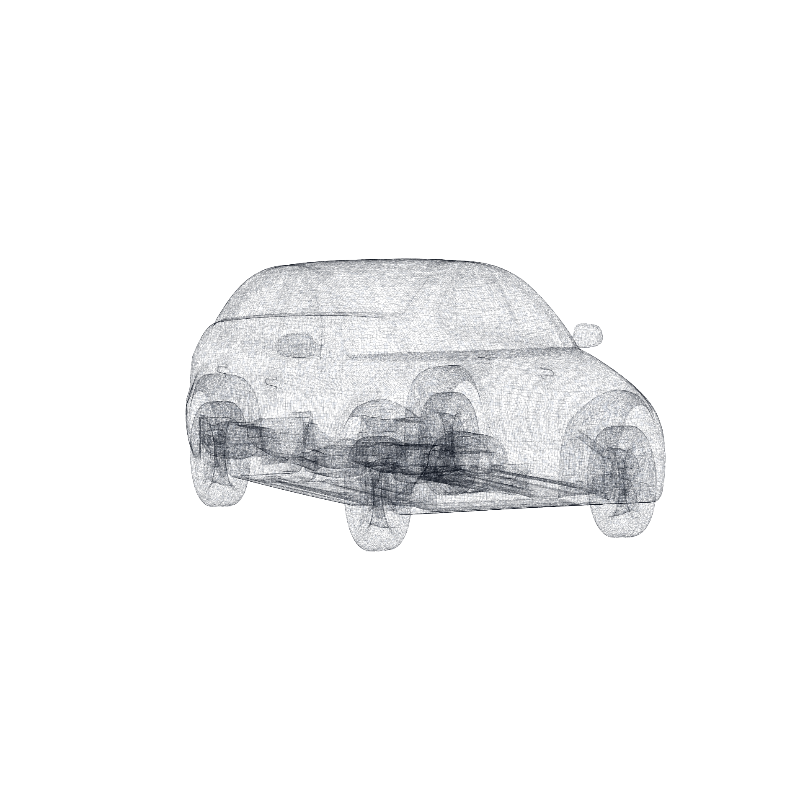
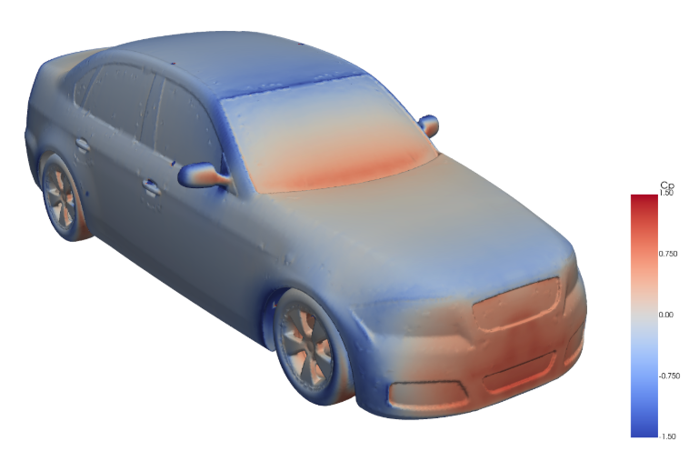
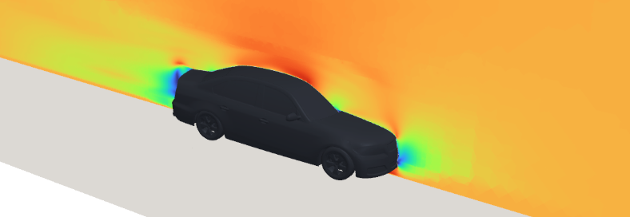

DrivAerML#
1. Introduction#
The objective of this validation study is to benchmark the Gradient Dynamics GPU-native steady RANS solver against the DrivAerML open-source automotive aerodynamics dataset and evaluate its suitability for industrial design and optimisation workflows.
DrivAerML is a high-fidelity public CFD dataset developed to support machine learning and data-driven aerodynamic modelling. The dataset contains 500 parametrically morphed variants of the DrivAer notchback vehicle geometry, with reference aerodynamic data generated using OpenFOAM v2212 scale-resolving CFD simulations on meshes of approximately 140 million cells per case.
The DrivAer geometry is widely regarded as the modern reference benchmark for automotive external aerodynamics. Developed at TU München by Heft, Indinger, and Adams (2012) in collaboration with Audi and BMW, it was designed to bridge the gap between simplified academic geometries, such as the Ahmed body, and proprietary production vehicle models. Unlike simplified validation cases, the DrivAer geometry captures key real-world automotive flow physics, including detailed underbody flow, wheel and wheelhouse interactions, side-mirror effects, A-pillar separation, rear wake formation, and pressure-recovery behaviour.
The DrivAerML dataset extends this benchmark through parameterised variations in body proportions, ground clearance, and rear-end geometry, creating a robust framework for evaluating solver accuracy and robustness across multiple vehicle configurations.
This study evaluates the Gradient Dynamics solver across three representative DrivAerML geometries: Run 1, Run 166, and Run 402. Simulations were performed using the Gradient Dynamics GPU-native RANS solver with the k-omega SST turbulence model. A mesh-sensitivity study was also conducted using three mesh refinement levels to assess convergence behaviour and grid sensitivity.
The validation focuses on four key objectives:
Accuracy: agreement of predicted drag coefficient (C_d) against DrivAerML reference CFD data.
Mesh sensitivity: convergence behaviour across increasing mesh refinement levels.
Robustness across geometry variants: solver performance across multiple parametrically different DrivAerML configurations.
Workflow readiness: ability to perform pre-processing, simulation, and post-processing through Gradient Dynamics Studio.
This study is presented as a numerical benchmark against published CFD reference data and is not intended as a wind-tunnel validation study.
2. Solver and Simulation Setup#
The simulations were conducted using Gradient Dynamics’ proprietary GPU-native, steady Reynolds-Averaged Navier-Stokes (RANS) solver with the k-omega SST turbulence model (see table 1 for simulation parameters).
For this validation study, the focus is strictly on benchmarking CFD accuracy against the DrivAerML reference aerodynamic data. The validation case consists of a steady, low-Mach external-flow simulation over the DrivAerML notchback vehicle geometry with a rolling-road ground-plane boundary condition representative of automotive aerodynamic testing environments.
Table 1: Simulation Parameters
Parameter |
Value |
|---|---|
Flow regime |
External automotive aerodynamics |
Solver type |
Steady RANS |
Turbulence model |
k-omega SST |
Inlet velocity |
60 m/s |
Mach number |
0.173 at 300 K |
Reynolds number |
4.06 x 10^6 |
Ground condition |
Rolling road |
Primary metric |
Drag coefficient, C_d |
The drag coefficient was calculated as:
Where \(A_{ref}\) is the projected area of the DrivAer body in the streamline direction and \(F_d\) is the drag force.
2.1. Mesh Strategy and Grid Sensitivity#
A mesh-sensitivity study was performed on DrivAerML Run 1, 166 and 402 using three mesh refinement levels to evaluate convergence behaviour and grid sensitivity. The mesh configurations are summarised in Table 2.
Table 2. Mesh Metrics for Grid Sensitivity Study.
Mesh Level |
Total Cell Count |
Target y+ |
Boundary-Layer Layers |
|---|---|---|---|
Coarse |
5,154,755 |
30 |
7 |
Medium |
14,043,191 |
10 |
10 |
Fine |
22,979,588 |
5 |
15 |
This validation approach provides two complementary assessments of solver performance:
Mesh convergence behaviour through progressive refinement on a single geometry (Run 1).
Robustness across geometry variants through comparison across multiple parametrically different DrivAerML configurations.
Figure 1 shows the surface mesh generated for the DrivAerML vehicle geometry used in the study.
{kind=link}

Fig. 5 Figure 1: Surface mesh of DrivAerML car body.#
3. Results and Validation Assessment#
3.1. Drag Coefficient Validation#
Table 3 compares the drag coefficients predicted by the Gradient Dynamics solver against the DrivAerML reference CFD data for Runs 1, 166, and 402. All simulations were performed using meshes between 5-23 million cells with 7-15 boundary-layer layers.
Table 3. Drag Coefficient Comparison Against DrivAerML Reference Data
Case |
Gradient Dynamics C_d |
DrivAerML Reference C_d |
Difference |
|---|---|---|---|
Run 1 |
0.295 |
0.304 |
-3.0% |
Run 166 |
0.247 |
0.245 |
+0.8% |
Run 402 |
0.261 |
0.264 |
-1.1% |
{kind=link}

Fig. 6 Figure 2: Surface pressure of from simulation run.#
Across the three validation cases, the Gradient Dynamics solver reproduced the DrivAerML reference drag coefficients within 3.0%, with two of the three cases within approximately 1.1% of the published values.
This level of agreement demonstrates that the solver can accurately capture the dominant aerodynamic behaviour of complex automotive geometries, including wake formation, pressure recovery, and vehicle-body flow interaction. The results are particularly relevant for early-stage aerodynamic design exploration and optimisation workflows, where rapid evaluation of multiple design variants is critical.
Figure 2 shows the surface-pressure distribution generated from the simulation results. The pressure field captures the expected aerodynamic behaviour across the stagnation region, bonnet, windscreen, roofline, side structures, and rear wake region of the vehicle geometry.
3.2. Mesh-Sensitivity Study#
A mesh-sensitivity study was conducted to evaluate convergence behaviour across increasing mesh refinement levels. The results are summarised in Table 4.
Table 4: Mesh-Sensitivity Results for Run 1
Mesh Level |
C_d |
Difference vs Fine Mesh |
Difference vs DrivAerML Reference |
|---|---|---|---|
Coarse |
0.282 |
-6.62% |
-7.08% |
Medium |
0.300 |
-0.63% |
-1.12% |
Fine |
0.302 |
- |
-0.49% |
The results show clear convergence toward the DrivAerML reference value as mesh resolution increases. The medium and fine meshes achieved drag coefficient predictions within approximately 1.1% and 0.5%, respectively, of the reference solution.
This behaviour indicates that the solver responds consistently to increasing near-wall and volumetric resolution, with improved agreement obtained through mesh refinement. The convergence trend also demonstrates the numerical robustness of the Gradient Dynamics solver for external automotive aerodynamics applications.
Figure 3 shows the velocity-magnitude distribution around the vehicle body, including acceleration regions around the front and roof surfaces, near-body flow structures, and downstream wake development.
{kind=link}

Fig. 7 Figure 3: Velocity magnitude around the car body.#
3.3. Flow-Field Assessment#
In addition to integrated aerodynamic coefficients, the simulations produced surface-pressure and velocity-field outputs for qualitative flow assessment. The resulting flow fields are consistent with expected external automotive aerodynamics behaviour, including:
Attached boundary-layer development along the front body surfaces
Flow acceleration around the roof and side structures
Rear wake formation and pressure recovery behaviour
Wheel-wake and underbody interaction regions
The ability to capture these features alongside accurate drag prediction provides further confidence in the solver’s suitability for automotive aerodynamic design studies.
3.4. Workflow Integration#
The complete validation workflow was executed through the Gradient Dynamics Studio platform, enabling geometry import, automated mesh generation, boundary-condition setup, GPU-native CFD simulation, drag coefficient extraction, and surface-pressure and velocity-field visualisation within a unified environment, while also supporting export to external post-processing tools such as ParaView and Tecplot.
The platform also supports the import of pre-existing meshes and interoperability with established engineering post-processing environments. This enables integration into existing CAE workflows without requiring engineering teams to replace their current toolchain, supporting practical enterprise deployment and adoption.
4. Interpretation#
The results support three important conclusions.
First, Gradient Dynamics’ steady RANS solver can reproduce DrivAerML reference drag coefficients with engineering-relevant accuracy across multiple realistic automotive geometries.
Second, the mesh-sensitivity study shows predictable convergence behaviour: increasing cell count and near-wall resolution improves agreement with the reference value, with the fine mesh reaching -0.49% error relative to DrivAerML for Run 1.
Third, the ability to execute this workflow through Gradient Dynamics Studio demonstrates a path toward enterprise deployment, where automated meshing, GPU-native simulation, and integrated post-processing can reduce friction in aerodynamic design studies.
5. Conclusion#
The Gradient Dynamics GPU-native CFD solver successfully reproduced the published DrivAerML reference CFD results across multiple automotive geometry variants, demonstrating strong agreement with the benchmark dataset and consistent convergence behaviour under mesh refinement.
Across Runs 1, 166, and 402, the solver predicted drag coefficient within 3.0% of the DrivAerML reference values, with two cases within approximately 1.1%. In the mesh-sensitivity study on Run 1, increasing mesh resolution improved agreement with the reference solution, with the fine mesh achieving a drag coefficient error of only -0.49%.
In addition to accurate drag prediction, the solver captured the expected aerodynamic flow structures around the vehicle geometry, including pressure distribution, wake formation, and near-body flow behaviour consistent with external automotive aerodynamics.
These results provide credible evidence that Gradient Dynamics can deliver benchmark-quality aerodynamic predictions on complex road-car geometries using a GPU-native CFD workflow designed for high-throughput simulation and engineering optimisation. The study also demonstrates the maturity of the broader Gradient Dynamics platform, including integrated meshing, simulation, visualisation, and interoperability with established CAE post-processing tools, supporting its applicability to enterprise engineering design and optimisation workflows.
References#
Ashton et. al. DrivAerML: High-Fidelity Computational Fluid Dynamics Dataset for Road-Car External Aerodynamics